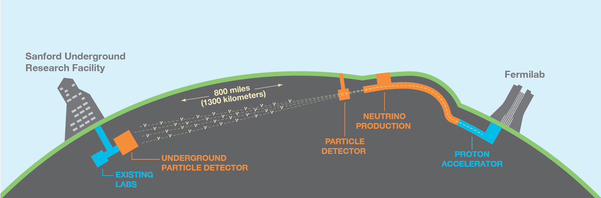
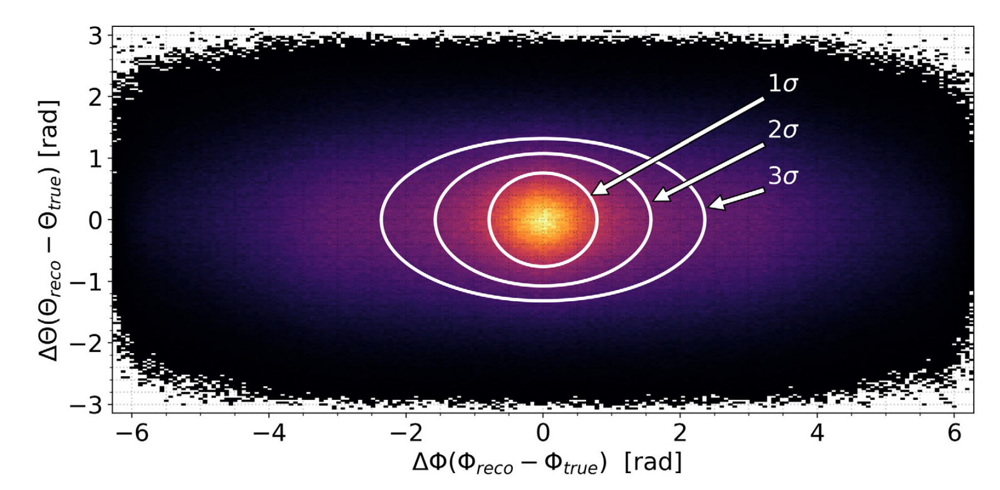
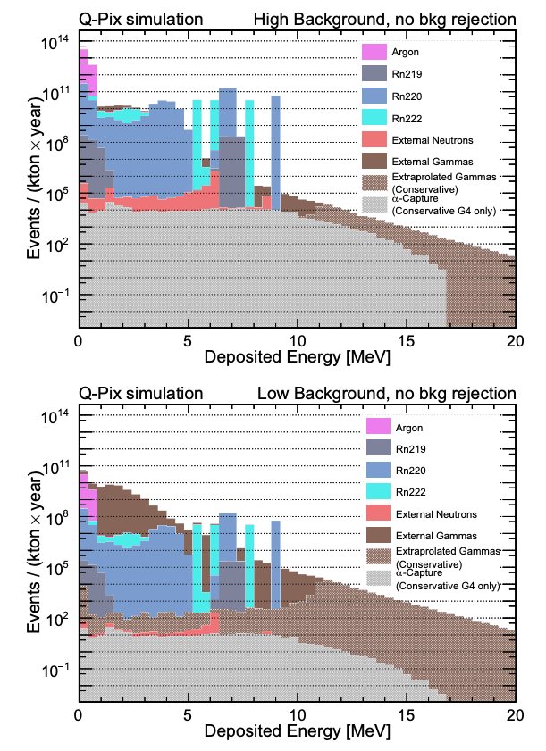

MY ROLE
検出器をつくる
現在の私の研究では、 ニュートリノ反応そのものを直接解析するというよりも、 それらの測定を可能にする検出器技術の 開発、コミッショニング、性能検証に 重点を置いています。
ローレンス・バークレー国立研究所では、 DUNE実験に向けた検出器開発、 極低温電子回路、 検出器コミッショニング、 性能評価などに取り組んでいます。
RESEARCH
ニュートリノは物質とほとんど反応しないため、 太陽、爆発する星、そして粒子加速器から届く 特別な「宇宙のメッセンジャー」です。
DUNE

Deep Underground Neutrino Experiment（DUNE）は、 世界最大級の素粒子物理実験のひとつです。 イリノイ州のFermilabで生成された強力なニュートリノビームは、 地球内部を約1,300 km通り抜け、 サウスダコタ州のSanford Underground Research Facilityの 地下深くに設置された巨大な液体アルゴン検出器へと到達します。
DUNEでは、 なぜ宇宙には反物質よりも物質が多く存在するのか、 巨大な星はどのように爆発するのか、 そして陽子崩壊は存在するのか、といった 物理学の根源的な問いに挑みます。
MY ROLE
現在の私の研究では、 ニュートリノ反応そのものを直接解析するというよりも、 それらの測定を可能にする検出器技術の 開発、コミッショニング、性能検証に 重点を置いています。
ローレンス・バークレー国立研究所では、 DUNE実験に向けた検出器開発、 極低温電子回路、 検出器コミッショニング、 性能評価などに取り組んでいます。
HARVARD UNIVERSITY
ハーバード大学での博士課程では、 液体アルゴン検出器を用いて 低エネルギーニュートリノをどのように観測できるかを研究しました。 特に、 重力崩壊型超新星から届くニュートリノと、 太陽で生成されるニュートリノに 重点を置いて研究を進めました。
SUPERNOVA NEUTRINOS
巨大な星が重力崩壊を起こすと、 星のエネルギーのほとんどは、 可視光が外へ飛び出すよりも前に ニュートリノとして放出されます。 こうしたニュートリノは、 星の内部深くで起こる爆発メカニズムを 直接探ることのできる貴重な情報源です。
博士研究では、 DUNEが超新星ニュートリノに対して持つ感度を どのように最大化できるかを研究し、 次に銀河系内で超新星爆発が起こった際に、 その方向や性質をより高精度に再構成できる可能性を調べました。


SOLAR NEUTRINOS
太陽の中心では、 核融合反応によって絶えずニュートリノが生成されています。 これらの粒子を観測することで、 光では直接見ることのできない 太陽内部の状態を調べることができます。
私は、 新しいピクセル型液体アルゴン検出器であるQ-Pixを用いた 太陽ニュートリノの高精度測定に対する感度を研究し、 将来のニュートリノ実験における その物理的可能性を示しました。
LOOKING AHEAD
現在の私の研究では、 博士課程で取り組んだ物理学的な問いと、 それに答えるために必要な検出器開発を ひとつの流れとして結びつけています。 DUNEのための検出器技術を前進させることで、 次世代のニュートリノ物理における 新たな発見を可能にすることを目指しています。